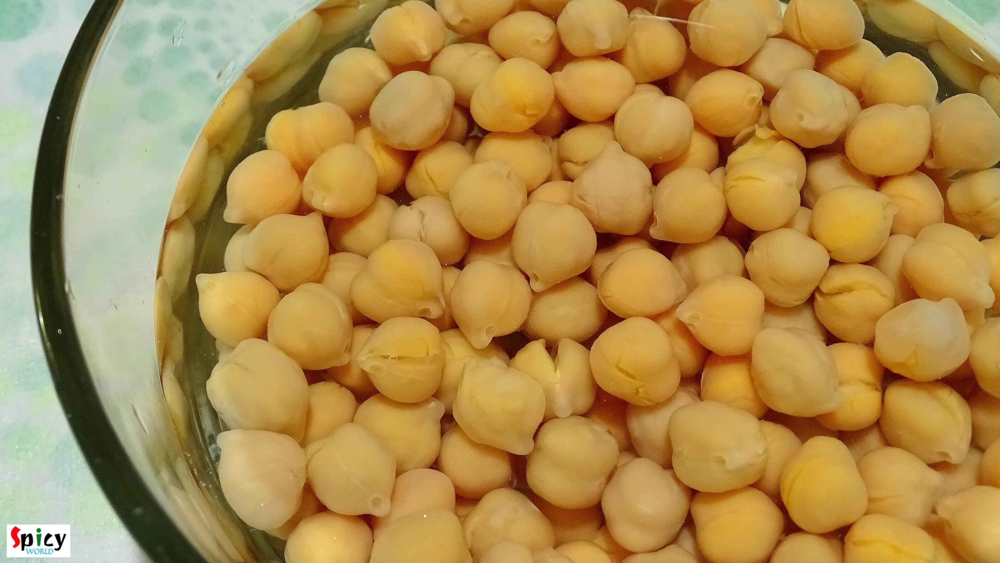
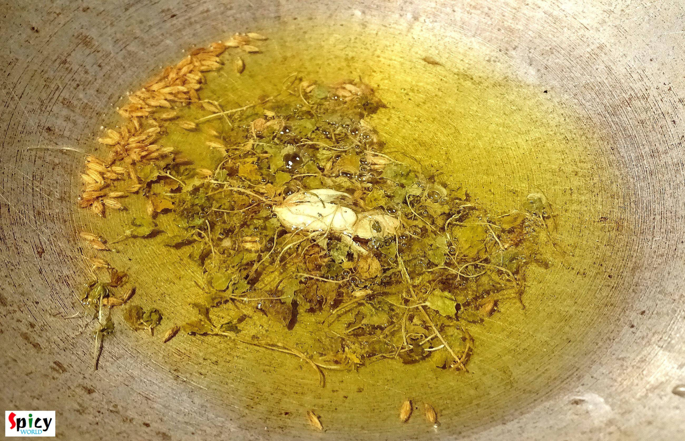
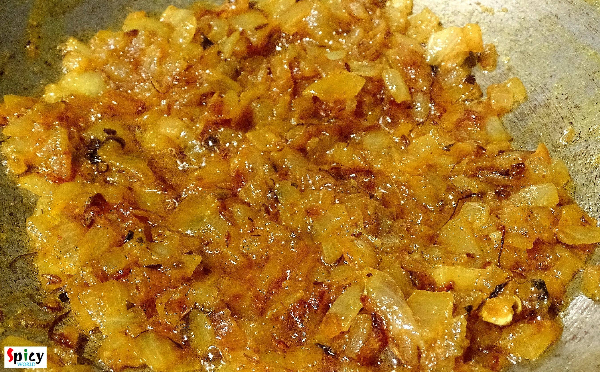
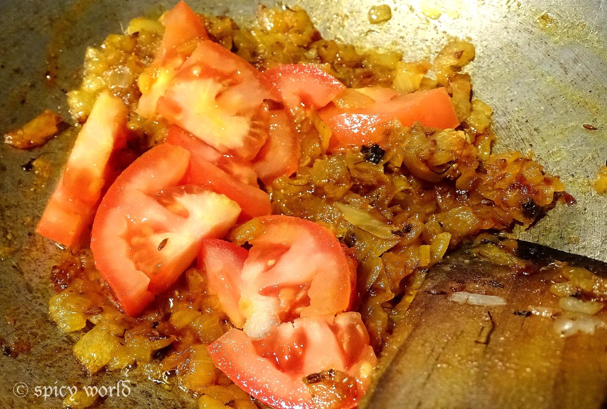
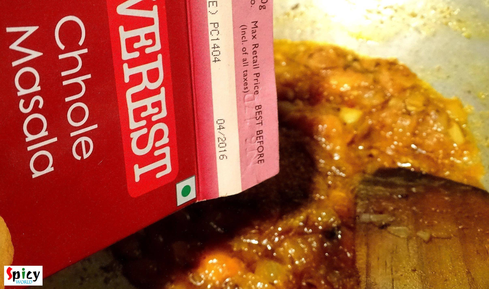
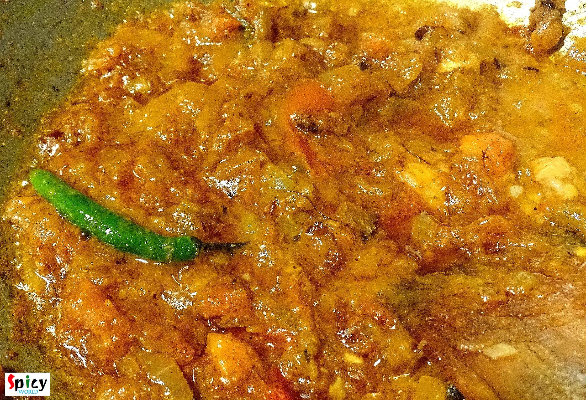
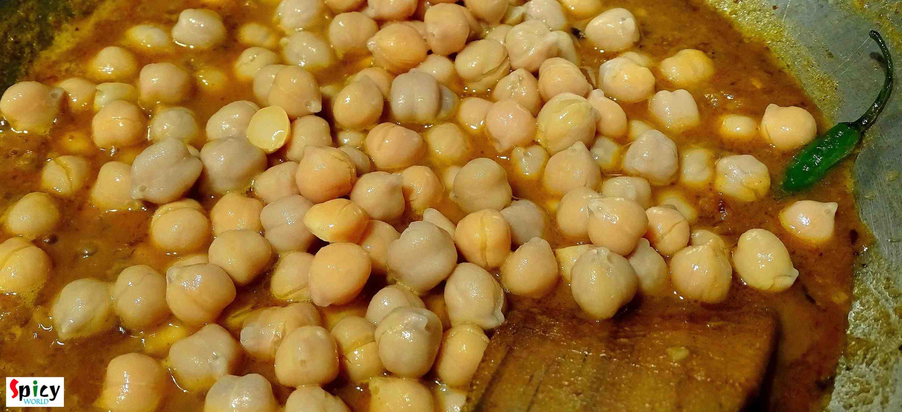
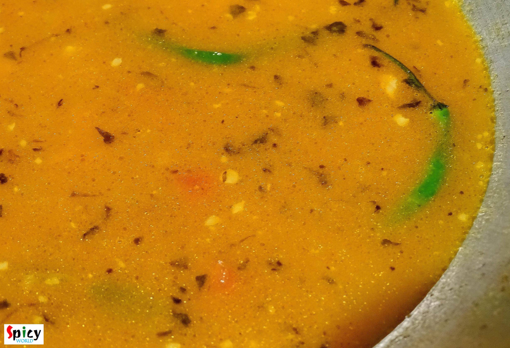

Chana masala / Chole masala (Curry of Garbanzo Beans)
I have a friend in New Jersy, Monica, who makes the best chana masala ever. I learned this recipe from her. Since we moved from Jersy I missed her and her cooking very much. This is a punjabi dish, goes very well with bhatura, puri or roti. The recipe is very simple and it tastes delicious.
")
Ingredients
- Chana (garbanzo beans) 1 cup.
- 1 big finely chopped onion.
- 1 Teaspoon ginger and garlic paste.
- 1 big fresh tomato chopped.
- 2 green chilies.
- cumin seeds Teaspoon.
- 2 green cardamoms.
- turmeric powder 2 Teaspoon.
- Red chilli powder 2 Teaspoons.
- chana masala powder 2 Teaspoons (You can get from Indian store.)
- 3 Teaspoons of dry fenugreek leaves / kasuri methi.
- Some chopped coriander leaves.
- Salt and sugar as per your taste.
- Mustard oil / White oil 5 Teaspoons.
- Stock or warm water 1 cup.
")
Steps
Soak the garbanzo beans / chana in water overnight.
Then halfboil the beans/chana in a pressure cooker. Keep them aside.

Heat oil in a pan.
Add cumin seeds, 1 Teaspoon dry fenugreek leaves and 2 green cardamoms. Saute it for a minute.

Then add chopped onion along with some salt. Fry this until it become golden brown.
Add turmeric powder and red chilli powder. Mix it.

Add ginger and garlic paste. Cook it for 3 minutes.
Then add chopped tomato, some salt and 1 to 2 Teaspoons of sugar. Cook this for 5 minutes.

Now add 2 Teaspoons of store bought chana masala powder. Mix it.

Add some warm water or for better result you can add stock of vegetables / chicken / mutton also and 2 green chilies.
Cover the pan and cook it for 10 minutes in medium flame.

Now add the halfboiled beans/chana. Stir well.

Cook it for 5 minutes in medium slow flame.
Now add some warm water for gravy. Cover the pan and cook it untill the beans become fully soft.

Then add crushed fenugreek leaves and chopped coriander leaves. Mix it and turn off the heat.
Your Chana masala is ready.
- Serve hot with naan, paratha, kulcha.
 (Final)")